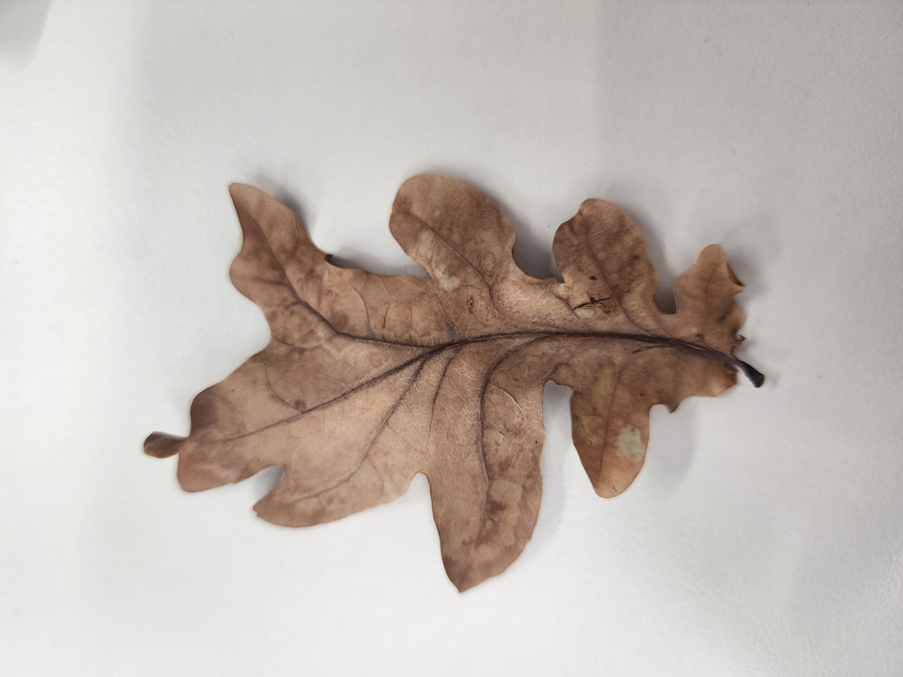
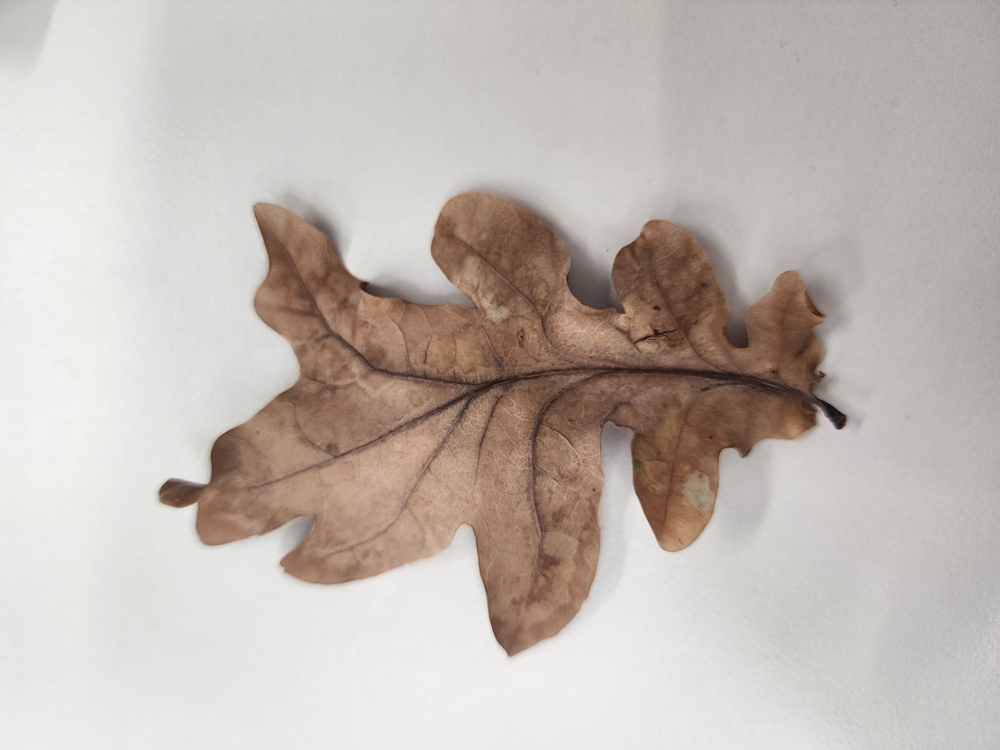

Found in dense shadowy cannopies of the forests, this creature has a hauntingly beautiful call with whistles and clicks.
This creature is shrouded in mystery, rarely ever sighted. Normally overlooked, it moves quickly and silently, wings allowing it to swoop on unsuspecting mammals. An efficient and stealthy predator, it has large dark eyes adapted for nocturnal vision. It emerges during twilight hours to hunt its prey, but during daylight, remains dormant in the branches. This is the best time for sightings of this creature.
Due to its colour and mottled plumage, it's hard to see against its natural habitat, between branches and leaves. It is large, with long wings and a wide flared tail when provoked. |
 
